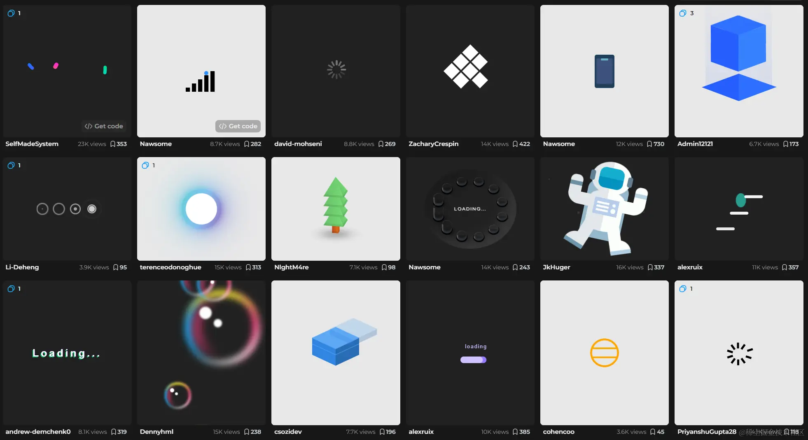

什么是 Uiverse.io
Uiverse.io 一个开源免费的 UI 组件库，由 HTML&CSS 组成，为前端开发人员提供了全面有趣的 UI 元素，只需要复制粘贴代码到 Web 或者应用里面，帮你轻松节省创作 UI 组件的时间和精力，无需花费一分钱，就能使用漂亮细腻的 UI 组件。
这里的 UI 组件包含了按钮、复选框、开关、卡片、加载、输入等六种组件类型，让写代码就像拼积木一样简单，如果你是开发人员可不要错过这么不错的资源哦。
重点是它所有样式均提供代码开源免费使用， 只需要动动手指复制粘贴即可！！！
4000+ 组件
是的，没有听错，目前官网一共提供了 4158 个组件！！！
Uiverse.io 网站上的 UI 组件确实为开发者提供了丰富的选择和灵活性，这些组件可以根据不同的需求和项目特点进行定制和组合。以下是对您提到的几类组件的详细说明和应用建议：
布局组件
- 格子布局：网格系统是现代网页设计的基础，可以帮助开发者创建整齐、一致的布局。
- 卡片：卡片式布局可用于展示内容块，适合博客、新闻网站和产品页面。
- 侧边栏：侧边栏可用于放置导航链接、广告、搜索框等，增加页面的可用性。
- 导航栏：导航栏是网页的门户，对于大型网站或多页面应用至关重要。
文本组件
- 头部和段落：定义文档结构和内容层次，使用不同的样式来吸引用户注意。
- 引用：用于引述文本或强调特定信息，通常带有不同的样式。
- 列表：有序和无序列表用于展示项目或要点，可以自定义列表项的样式。
表单组件
- 输入框：用于收集用户信息，如姓名、邮箱、搜索关键词等。
- 单选框和复选框：用于让用户从多个选项中选择一个或多个答案。
- 滑动条：适合于范围输入，如音量控制、日期选择等。
- 按钮：用于触发动作，如提交表单、发起请求等。
功能性组件
- 模态窗口：用于弹出式对话框，可以在不离开当前页面的情况下展示信息或请求用户操作。
- 弹出菜单：下拉菜单或侧边菜单，用于减少页面上的元素数量，优化布局。
- 提示框：用于显示通知、警告或信息提示，增强用户体验。
- 进度条：展示操作进度，如加载、处理中状态等。
装饰性组件
- 边框：可以为元素添加边框，以突出显示或区分不同的内容块。
- 阴影：为元素添加深度和立体感，提升视觉效果。
- 颜色渐变：颜色渐变可以创造吸引人的视觉效果，用于背景、按钮或文本。
Uiverse.io 上的每个组件都提供了自定义的空间，允许开发者根据自己的需求调整样式、尺寸和行为。通过这些组件，开发者可以构建出既美观又功能丰富的网页和应用界面。此外，Uiverse.io 的社区活跃，开发者可以在这里获得支持、分享经验和参与讨论，进一步提升自己的前端开发技能。